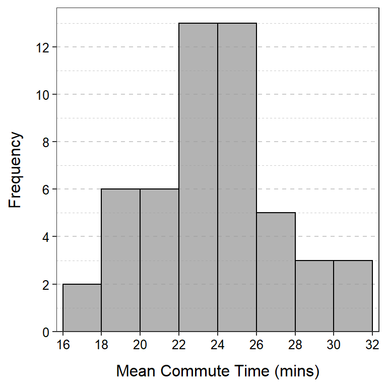
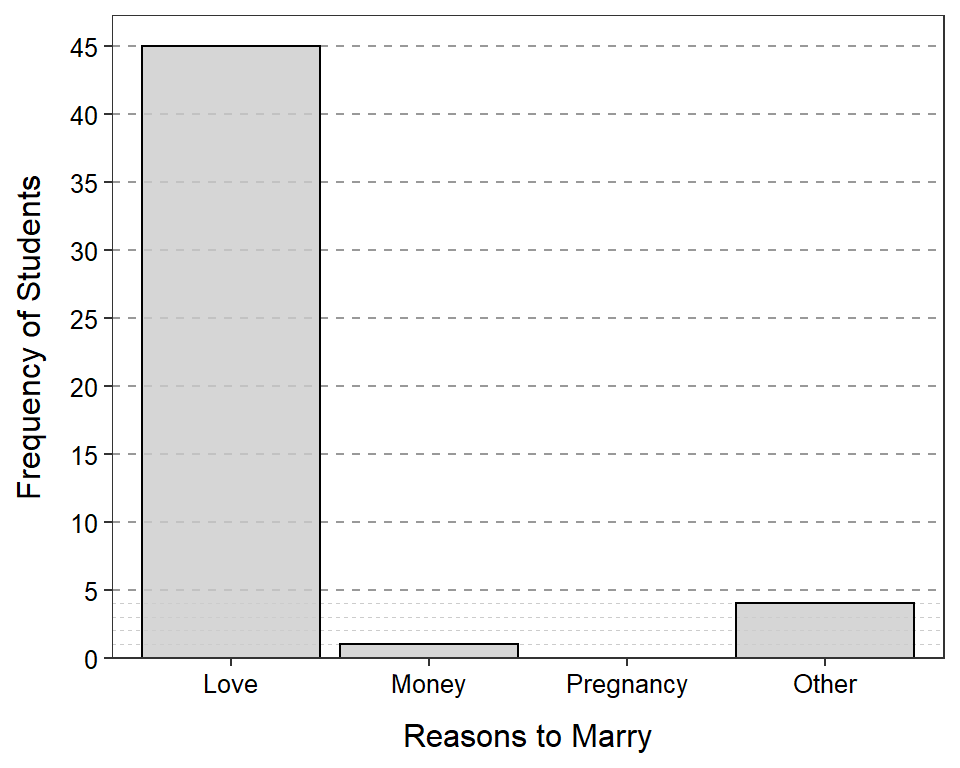

Calculate Summary Statistics I
Consider the following three data sets for questions below. Show your work for all questions. [See hints at bottom.]
Data Set 1
18 28 25 21 16 24
Data Set 2
4 54 16 85 52 29 24 71 61 60 2
Data Set 3
93 81 34 5 54 84 54 13 1 35 79 63 97 71
- Hand calculate the mean of Data Set 1.
- Hand calculate the standard deviation of Data Set 1.
- Hand calculate the median of Data Set 2.
- Hand calculate the IQR of Data Set 2.
- Hand calculate the median of Data Set 3.
- Hand calculate the IQR of Data Set 3.
- Hand calculate the range of Data Set 3.
Histograms
The U.S. Census asked individuals 16 years old and older “How long in minutes is your one-way commute to work each day?”. The mean for individuals from each state was computed and is plotted in the histogram below.

Use this histogram to answer these questions.
- What is an individual in this example?
- What is the variable in this example?
- What type of variable is recorded?
- How many individuals are represented in this histogram?
- How many individuals had a mean commute time between 16 and 18 minutes?
- How many states had a mean commute time between 18 and 24 minutes?
- What was the range of mean commute times for the bin with exactly five states?
Frequency and Percentages Tables
 The breeds that won the “Herding Group” at the Westminster Kennel Club championships are listed here. Perform the following tasks with those data “by hand” (i.e., without using R or other software).
The breeds that won the “Herding Group” at the Westminster Kennel Club championships are listed here. Perform the following tasks with those data “by hand” (i.e., without using R or other software).
- Construct a table that shows the frequency of breeds that won the group. [For simplicity, lump all of the “shepherd”s together, all of the “collie”s together, and all of the “corgi”s together. Keep other breeds as separate categories. Ignore minor spelling differences throughout.]
- Construct a table that shows the percentage by breed that won the group.
- Hand draw (roughly) a bar chart of your results.
- Write a brief conclusion from these results. [This is performing a univariate EDA for these categorical data.]
Bar Chart I
 A Northland College student asked 50 of her peers “Why should people get married (Select Love, Money, Pregnancy, or Other)?” Her results are shown in the bar chart below. Use this information to answer the questions further below.
A Northland College student asked 50 of her peers “Why should people get married (Select Love, Money, Pregnancy, or Other)?” Her results are shown in the bar chart below. Use this information to answer the questions further below.

- What is an individual in this example?
- What type of variable is recorded?
- Construct a frequency table from this bar chart.
- Construct a percentage table from your frequency table.
- Write a brief conclusion from these results.
Hints
You can check your work with sdCalc() and iqrCalc() in R. For example,
> # Enter (example) data into d vector
> d <- c(16,23,47,13,18,12)
> # Check calculations for data in d
> sdCalc(d)
Demonstration of parts of a std. dev. calculation.
x diffs diffs.sq
1 16 -5.5 30.25
2 23 1.5 2.25
3 47 25.5 650.25
4 13 -8.5 72.25
5 18 -3.5 12.25
6 12 -9.5 90.25
sum 129 0.0 857.50
Mean = x-bar = 129 / 6 = 21.5
Variance = s^2 = 857.5 / 5 = 171.5
Std. Dev = s = sqrt(171.5) = 13.0958
> iqrCalc(d)
Median (=17) is the average of values in positions 3 and 4.
12 13 [16 18] 23 47
Q1 (=13) is the value in position 2 of the lower half.
12 [13] 16
Q3 (=23) is the value in position 2 of the upper half.
18 [23] 47